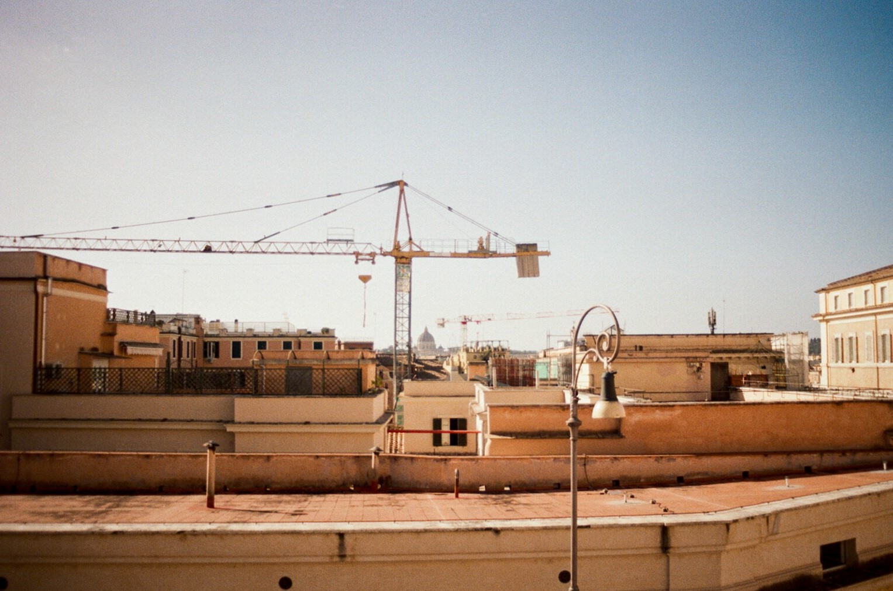

Thought Piece
Dan Gill on energy resilience for critical national infrastructure
From local outages to board-level risk
Digital systems, physical processes and supply chains are now tightly coupled to grid stability, meaning power outages can now become high-profile disruptions with significant economic, regulatory and reputational fallout.
Last year's Heathrow shutdown illustrated this clearly: a substation fire triggered a cascade through complex, interdependent systems, grounding operations and amplifying impacts far beyond the initial incident.
At the same time, the stresses on power systems are increasing. Demand is growing and a higher share of intermittent generation places new requirements on system balancing and resilience.
In this context, energy resilience – maintaining essential operations through credible supply failures – moves from an engineering detail to a board-level risk. For Chief Risk Officers, the priority is to map dependencies across the full electricity value chain, invest in practical contingencies, and demonstrate preparedness before the next local failure becomes national news. For policy makers, the focus should shift beyond generation build-out to assurance: setting clear, proportionate resilience expectations for critical national infrastructure so operators can evidence credible continuity plans and consistent standards before failure tests them in public.
Increasing importance of reliable power…
Modern organisations integrate digital and physical processes, with both layers typically assuming power stays steady. Increased reliance on grids has meant that this downtime is no longer a local inconvenience, but now rather a systemic event that attracts scrutiny, cost and political attention. Energy resilience is the ability to maintain essential operations through credible electricity supply failures, including local network incidents. Failures to achieve this can result in a number of short-term and longer-term problems.
Heathrow provided an illustration of this last year. A substation fire, reported as an electricity incident rather than a deliberate attack, contributed to the airport shutting down for roughly a day. The disruption multiplied fast, with around 1,300 flights cancelled and around 200,000 passengers impacted. In the aftermath, simple explanations were sought after, yet the answer may lie in the cascade: A single local failure propagated through interdependent operations that had grown, layer by layer, over decades.
…in the face of increasing demands on our power systems
Yet coinciding with an increased need for reliable supply comes increasing risk of failure: growing demand coupled with a higher penetration of low-inertia intermittent generation will put additional strain on our power systems. Furthermore, electrification pushes transport, heating and industry onto electricity, meaning the consequences of supply interruptions rise. This will also extend what society treats as critical – services that once tolerated downtime, such as charging networks, become tied to mobility, emergency response, and economic participation. The policy focus here is not just generation build-out, but whether operators can evidence continuity through credible local supply failures.
Accountability vs the operational impact
After any high-profile failure, the accountability story competes with the operational story. It is understandable, and often important, to ask who missed a warning, who carried the duty, and who pays. Yet the operator's core problem may be missed in this debate. The primary operational impact lands on the organisation that cannot function, regardless of whether a later report attributes fault to a contractor, a network operator, an asset owner or an unfortunate sequence of events. Whilst a critical operator may have redundancy, backup generation, and crisis playbooks, as the grid develops they may find that a single point of failure can still stop a complex site for longer than customers and regulators will tolerate.
The priorities for Chief Risk Officers
The practical challenge for risk-mapping is enhanced by the complexity of the grid: electricity does not arrive from a single entity, but from a chain spanning system operation, transmission, distribution and sometimes private network services. If risk officers cannot describe that chain for their own site, they manage risk via assumption. Critical operators may need to talk separately to each link of the chain to understand failure modes and mitigations, which is at present a challenge. A 'single front door' service that maps how electricity reaches a site and helps test scenarios would let operators explore implications without becoming market experts.
From a resilience perspective, diesel generators remain the simplest resilience tool for many critical sites, and in an emergency most stakeholders will accept temporary high carbon solutions. Still, boards should anticipate how backup evolves as electrification expands. On-site battery storage, cleaner fuels and different operating modes may become part of the resilience brief as practical continuity planning.
Inside organisations, Chief Risk Officers will need to incorporate resilience into their remit more and more. The discipline may be simple: Define the worst credible electricity supply failure for the operation, identify how it could occur across the value chain, reduce likelihood and impact with specific investments and rehearse responses. For this to be affective, many operators will need stronger internal capabilities to interrogate technical assurance.
The priorities for policy-makers
On the policy side, the energy regulator cannot be expected to easily impose resilience requirements on every critical operator outside its remit. If standards are to tighten, this will likely come from government. Attestation or certification models could ask operators of critical national infrastructure to show that they have asked the right questions, engaged the right counterparties and built credible contingency plans.
Ultimately, resilience will start to differentiate organisations as it determines whether operations and reputation survive the next local failure that becomes a national news story.
Quick-fire industry review
What is the best near-term commercial opportunity in the space?
It's not necessarily from a commercial angle, but from a societal angle we want to be in a place where there's a level of confidence that all of the right questions have been asked. Critical services should know they can keep power if the system fails.
What is the single biggest barrier?
Brownfield complexity; most critical sites have grown over decades and inherited infrastructure constraints that are hard to redesign cleanly
What policy change would help the industry the most?
A government-led attestation requirement for critical national infrastructure electricity resilience would normalise a consistent standard of assurance and increase concentration on this space
What is the most overhyped misconception today?
The misconception that 'N plus one' redundancy is still sufficient resilience policy – some sites may need 'N plus two' or 'N plus three' in the case of high consequence failures
Which one metric would you track monthly for the industry?
A practical comparative metric is how much redundancy, in credible scenarios, a critical site has – and how quickly it can restore essential operations after a supply loss.
For those interested, where can they learn more?
The NESO North Hyde review and the Kelly review for the Heathrow failure are interesting reading – it's particularly interesting to consider how your own organisation would look under the same scrutiny.
Dan Gill is a Partner in EY's Industrials & Energy practice. Over the past 20 years, Dan has worked with across transmission and distribution networks on large scale transformation programmes. He specialises in helping utilities tackle change, with a more recent focus for our future energy system. For those interested in learning more on this topic, please reach out to Dan via his LinkedIn profile.
The views reflected in this article are those of the authors and do not necessarily reflect the views of Ernst & Young LLP or other members of the global EY organisation.